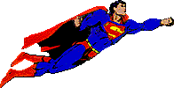
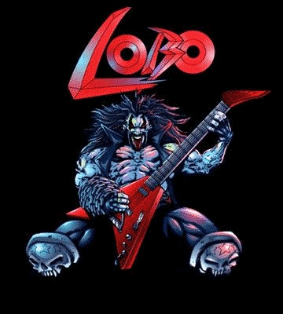
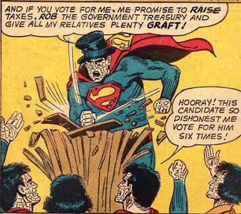
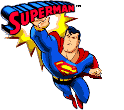

Superman TAS: Creature Feature
Intro.

So in the 90s, they made a very popular Batman cartoon adaptation, a series that most still remember fondly. And riding on its sucess they decided to try and do the same for Superman.
It was a bit challenging, but they made it. And it was just has good as Batman TAS.
While not nearly as popular to me, Superman is to Sci-fi what Batman is to Crime Noir, playing homage to certain scientific tropes, and even be creative when it comes to creature design.
Oh yes, creature design, see Batman was limited by the fact that it had to be more grounded, as at least as much you could possibly get with a show about a masked hero, while a sci-fi setting has no such limits.
I remember as a kid looking foward to the next episode because you never knew what whould show up next.
So without further ado, here´s my love letter to these beings. I did however decided to just focuses on the more obscure parts of this show.
Look, we already know about Brainiac, lets give some love for these other guys.

The Kryptonian Amoeba Thing
The first episode in the series starts off by introducing life on Krypton before its unfortunate demise, while most Superman adaptations only rush through the destruction of Krypton before moving on to Clark´s life on Earth, this series takes it sweet time doing so.
And with that, we also get a small glimpse of Krypton´s Fauna, such as whatever tried to prey on Jor-El while he tries to conduct his research.


This scene alone, made a huge impression on me as a kid, especially with its scary alien design, it seems to be some species of predatory invertebrate with a semi-transparent body that shows its pulsating organs as well like some giant amoeba as well as a tentacle with fans to grab its prey.
You wouldn´t wanna be alone with this thing that´s for sure.
It also has the ability to melt through ice making it suitable for a cold environment, I can only theorize it can regulate its own body temperature as well.
Thankfully Jor-El manages to escape it, and we learn that it's called a Shoggoth which funny enough is a Lovecraft reference (possibly the Mountains of Madness due to the icy environment), one of many that will show up on this show.
Sadly that is the last time we´re ever gonna see them because they are now officially extinct thanks to Krypton going Kaboom.
Cyclop Aliens

At the End of what I´m calling Superman´s Origin Arc we´re introduced to a mysterious ship with an alien crew who have detected a mysterious spacecraft and decided to bring it on board to investigate.
They definitely stand out as being the first sentient aliens on this show with a non-humanoid design, with their one eye and triangular purple head.
And I guess to emphasize the extraterrestrial aspect the animators decided to give them an astronaut suit, which is also a nice touch That being said I´m gonna go on a limb and suggest they are also an original creation for the show.

We don´t really get to know much about them because their purpose in the story is to simply serve as murder fodder and establish Brainiac as a future threat, and boy do they deliver.
As soon as they bring him on board he starts murdering every one of these poor guys in a scene that would not look out of place in a horror movie.


Shame, you know, I always liked to imagine them as a group of alien scientists, because I mean, they look like a bunch of science-y types . I´m also nicknaming them as Cyclopeans.
The Space Zoo

This is actually one my favorite episodes in the entire Superman series, and for two reasons, the concept of a space zoo, and our first introduction to the Main Man Itself: Lobo! Voiced by the talented Brad Garett.
The basic premise of this episode is that Lobo here gets hired by an alien called the preserver whose main purpose is to collect endangered species from all over the Universe to add to this space nature reserve.
And he just got word of the last surviving Kryptonian in existence, Superman.
Lobo manages to capture Supes, only to get a taste of his own medicine since he too is also the last surviving member of his race (destroyed his own planet for a science project)
So those two are now forced to team up together to escape.

That being said, this entire episode alone is a feast for the eyes of sci-fi nerds, there´s cameos like this one above.

And entire rooms of tubes filled oddballs like this weird lobster alien thing.

Or that cool green purple alien.

Or this dinosaur looking alien, which Supes uses to help him escape. Interesting I had word that this fella could be a cameo for a more obscure cartoon.

Or even this space snake that would not look out of place in Dune. Lobo of course ends up ripping off his skin, while effective it´s also up there in terms of body horror.
And speaking of body horror....
The preserver himself is just as weird as the rest of his zoo, with a primary form that look more a sage-like alien egg and second more deadlier one, beneath his skin.
First I wonder how the heck does he manages to fit all that mass, also he wear it to keep appearances? Possibiliy to not street out the aliens in this care? Or is this a common feature for all of his species.

After which he gets kicked into the vacuum of space;
That being said what happens to all those poor aliens, stuck on that ship? The episode ends with Lobo telling his boss, that Superman decided to move them all to his Fotress of Solitude because as he puts it, he´s a sucker for hard luck cases.
Hey Lobo should know, he has a fondness for endangered space dolphins himself!

The Prometheon

Rather than a malicious alien machine gone rogue like Brainiac, this one is just a malfuctioning contruction Robot.
Designed for hard labour by an unknown space civilization, it got its fuel thanks to the heat of two suns.
But, umm its programming worked a little too well, as it started trying to absorve every single heat source it could find causing a lot of damage, so the creators decided to just strap it to an asteroid and yeet it into space.
Which is how Supes here finds it while on a mission to stop an asteroid going towards Earth.


Its main weakness is the cold as it turns out, which makes me wonder, while haven´t the aliens just did it in the first place instead of launching into space?
You would think they would consider having a failsafe in case they wanna turn it off? Some advanced civilization they are.
Bizarro´s Bizarre Adventure

Most comic book fans are probably familiar with Bizarro, a Superman from an equally bizarre universe, who seems to speak like it´s opposite day.

But this version is a lot more tragic, see this version is a Superman clone.
He starts normal enough, you can´t even tell the difference between him and the real thing, same handsome looks, same boy scout personality....
Until he starts going through clone degeneration during his fight with the real Man of Steel.

Its during this where he gets one huge existencial crisis over not being the original. And most of his arc is about trying to be just like Superman, poor dude.
And it certainly does add insult to injury to find out he was nothing but a tool for Luthor who wanted a Kryptonian of his own that he could control, which is pretty much a running gag in the dc universe at this point.
Yeah, it isn´t easy when the only thing you have it going for is that you´re supossed being someone else´s copy instead of his own person.
What happens is pretty par the course between clone stories, he fights with the original trying to prove that he´s just as good as the real thing.
And people get caught in the crossfire and all that.
But what Luthor didn´t take into account, since he´s meant to be the perfect Superman clone, Bizarro shares the same moral compass, not that easily controllable.
Seriously Luthor coudln´t you just a make a superman robot?

This comes into play when the cloning facility comes crashing down, when he decides to sacrifice himself to save Louis, making worthy as hero like any othe.r
Don´t worry he lives.
But being an heroic clone can be a lonely existence, specially if you have no one to share it which brings me to...
Krypto is Best Boy
Ah yes, Superman´s favorite animal sidekick, Krypto the Superdog! We even see baby Kal-El, playing with a cute white puppy in the beginning.

What heroic adventures shall await them? Here I´m....
Oh wait, hmm he died with the rest of krypton? Oops
Actually I´m gonna talk about here about a different variant of this character, as in this cute little guy right here:


So his origin story starts with Bizarro finding about the Fortess of Solitude, and in his quest to finding himself he hops in for a visit.
After damaging part of the alien enclosure he´s jumped by one of its inhabitants, and he mistakes it for a dog.
And they both hit it right off, dawww he´s made a new friend.

He also ends up mistaking him for the original superdog, after going through Jor-El' s original message to Ka-El, and gets his memories all confused.
So for all intents and purposes, this cutie is the Krypto of the DCAU.
Not gonna talk much about the rest of the plot, it basically revolves around Bizzaro trying to simulate the destruction of Krypton, much to the dismay of the people involved.
But hey that zoo from the Lobo episode make another apearance.


I do gotta say for a alien that tries to eat people´s faces, I kinda want one, maybe its the big ol puppy dog eyes.

At this point Superman realizes that Bizarro just wants to be him, he just wants to be a hero.
His solution to this is to simply give him a planet to protect ( preferably with no one else around), and someone to care for.
Who is it that he picks to join Bizarro?
And that is pretty much how we leave him at the end of the series, just him, his faitfull dog fighting to protect the rock people of this planet.
Until Justice League that is, but that is a story for another time.
Superman Meets Lovecraft

This is the episode where things start venturing into more supernatural territory, and we start seeing Supes interacting with other heroes.
The plot starts off with some poor Smuck robbing a museum and reading the words aloud on an ancient tablet. And if you ever watched The Mummy you know why that is a bad idea.

Dude gets possesed by a dark spirit called Karkull, and he proceeds to create havok, at one point he takes over the daily planet and turn it into his eldritch lair.
First order of business? To turn everyone there his lovecraftian minions, and he intends to do it to all life on Earth!
Not even Louis and Jimmy could escape without being mutated too, complete with a dose of body horror.

That being said this is episode is a feast for the eldritch horror fan, I´m a bit of a fan of the elegant design of the spirits that convert people into minions, they look like mixture between a ray and a octopus.
While the show does not mention, I found on some notes that theese guys are called shoggoths (shoggoths again!?), what was elder thing taken or something?

Of course there is no rhyme or reason on what form everyone takes, some take the form of these triclops, that remind me of those medieval monsters if you squint.

And then you got jimmy who gets turned into Cthulhu, complete a Octopus head and wings. But I think the most hilarious design, is Louis, because she still retains her hair for some reason, I guess they wanted the audience to tell her apart from Jimmythulu.
She does have an adorable derpy look to her.
Last but not least, during the middle of the fight, Superman had to dive deep into the hellmouth itself and escpae what is the embodiment of nightmarefuel itself!

We don´t see its body, except for his glowing eyes or teeth, all we have no idead about the size of this thing.
Fun fact about this episode´s monster, he was actually based on a Doctor Fate villain, Ian Karkull who unlike on the cartoon was just some guy?
I guess the creator were like, this is boring! Let´s make him into a tentacled monstrousity instead! And the show was better for it.
Superman Meets Lovecraft 2: Electric Boogaloo

Oohhhhh, you thought we were done with the lovecraftian references no? Well think, again!
Things start lighthearted enough, we get to see Supergirl again. She´s adapted to earth life pretty well with the kents, and eagerly await for springbreak so she can visit her cousin
But before can hop on the bus to Metropolis, she bumps into one very sus preacher.

Nahaah, it´s probably nothing, she´s just to eager to go to the big city, and we get is a cute montage of she and Clark, hanging out, fighting crime together...

She goes home expects a warm welcome but instead finds that the entire town has joined the craze that is sweeping the nation! A brand new religion and its name is Unity!
Remember that creepy preacher? Turns out he´s some kind of Nyarlathotep expy.
He is of course the servant of the An Eldritch Alien, who travels from planet to planet, assimilating all lifeforms into its hivemind.
And Smallville is about to become its next pitstop, just a heads up as things are about to become a bit disgusting.


How Unity´s biology works is that it launches its "tentacles" into people´s mouths or forehead, being parasitic in nature it takes over the host nervous system, and makes them subserviant to the alien´s will.
And they don´t alway have to be connected, once infected they can live inside the host´s body and can even be used to infect even more victims. You might not even know who is secretly a Unity drone until it´s too late.
Also every single host can feel what the rest of the hivemind feels, including pain, like how the heck to fight this thing if your adoptive Mom is gonna get hurt too?
As it turns out their main weakness is x-rays, kinda convenient for Kryptonians to have super vision as their power ain´t it?
Now there´s a reason why I called the preacher a lovecraftian expy, see at this point you might be thinking that the priest is just another human victim of Unity.
No, he eventually rips off his human guise....
Warning: Jumpscare

To reveal that is none other than another eldrith horror, he´s either the same species as Unity or a second extension of itself.

Anyone familiar with the works of HP lovecraft knows that Nyarlathotep's modus operandi is to take a human guise and then spread madness whenever he goes, specially as a shapeshifter.
He is also the messager of the outer gods and fuffills their will, and he is specially the servant of One Azathoth.
It´s also implied that he is a physical extension of said God, being its mind, heart and sould, while Azathoth is simply the body.
Between the type of relationship between these two aliens not to mention the similarites in apearance, it´s very easy to see the connection.
Of course things do end well at the end of the episode and every gets saved, but yeesh, this is actually one of the most nightmare inducing episode, second to the series finale!
I can only imagine how many poor kids must have been traumatized by this episode, cuz damn.
Good thing these next few entries go for a lighter tone.
This freaking guy
Yeah, he´s probably most entertaining character character in the series thanks to the talent of Gilbert Gottfried.
There´s not much to say about him, I mean he´s a trickster from another dimensional who wants to mess superman, and then outsmarted over and over again.
But if I had to say one thing is that how bizarre thing it is that this guy, same character from the comics. Literally!
No, I really mean it, every single version of Mister Mxyzptlk that shows up either in comics or animation are all the same guy, due to his multdimensional powers, well according to Superman Reborn.
Kinda Meta but I´ll take it.
Bonus: More Cute Aliens!
Couldn´t end this page without one last look at the series finale. That beings said there´s some cool alien designs
At the start of the episode we Darkseid´s forces fighting a resistance group. And they the most adorable resistance group ever!


They look like a mix between a cat a very cute bug. I love how they´re animated, they´re kinda expressive for a non-human design.
Sadly they surrender and we have no idea of their fate.
Meanwhile, back on Earth, we see Kara trying to keep things under control and what is that white furry thing behind her?
Oh! It´s another of Superman´s Zoo aliens, looks like a yeti but 10 times cuter, and keeps messing around with Kara eating her pizza, no different than a cat at this point.
Its probably one of the lighter moments for what is otherwise a very dark and depressing episode.


GO BACK
©Superman and its respective characters belong to DC Comics and Warner Bros.